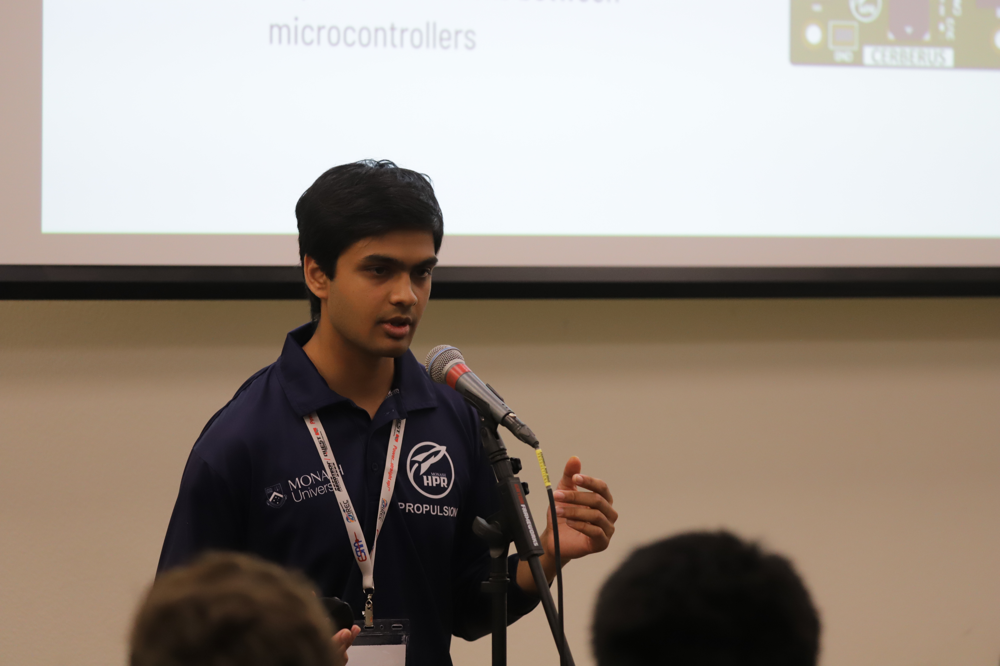

About
[FILLER: 60-90 word intro about engineering approach and focus areas. Mechatronics background combining hardware and software. Experience building test-critical systems from PCB design through firmware deployment. Strong track record in production environments and aerospace applications where reliability matters.]

- [FILLER: Current education/status]
- [FILLER: Primary technical focus]
- [FILLER: Key specialization area]
- [FILLER: Notable project domain]

Competition Recognition

Field Operations

Technical Presentation
System Testing
How I Work
[FILLER: 80-140 words about engineering philosophy and approach. Focus on reliability-first design. Emphasis on testing and validation at every stage. Experience working in cross-functional teams. Comfortable moving between hardware bring-up and software development. Preference for data-driven decision making.]
[FILLER: 80-140 words about what drives project selection and learning approach. Interest in systems where failure is not an option. Drawn to problems requiring both creative problem-solving and rigorous testing. Continuous learning through hands-on implementation. Value of documentation and knowledge transfer.]